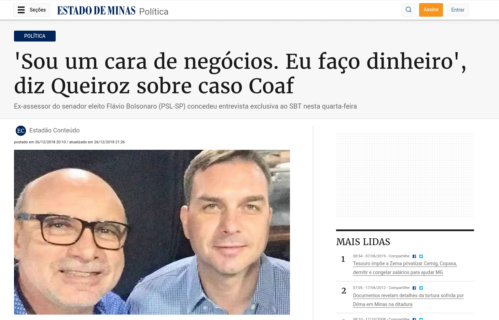
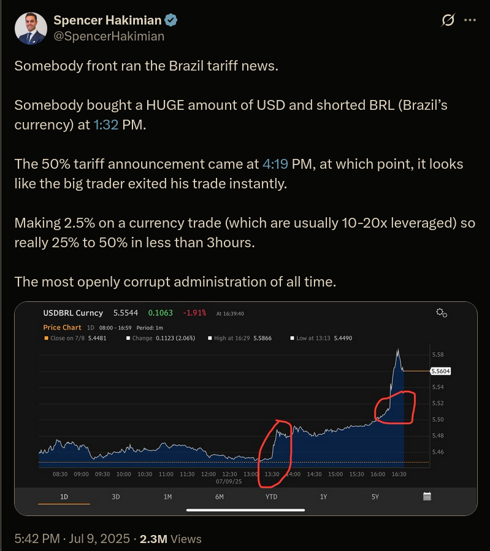

24/07/25
Nova plano de IA dos EUA, pix, GPS e especulação freestyle. Fechamento do 12ft.io, Subnautica 2 e reacts.
Novas preocupações de IA desbloqueadas
https://bsky.app/profile/bostonjoan.bsky.social/post/3lu6ozfvkc22t
O novo plano de IA dos EUA
Os efeitos dessa mudança provavelmente se espalharão por diversos setores e poderão até ser sentidos pelo consumidor americano médio. Por exemplo, o Plano de Ação para a IA minimiza os esforços para mitigar os possíveis danos da IA e, em vez disso, prioriza a construção de data centers para alimentar o setor, mesmo que isso signifique usar terras federais ou mantê-las energizadas durante períodos críticos da rede elétrica.
No entanto, muitos dos seus efeitos dependerão de como o Plano de Ação para IA for executado, e muitos desses detalhes ainda precisam ser resolvidos. O Plano de Ação para IA é mais um plano de ação do que um manual de instruções passo a passo. Mas a direção é clara: o progresso é fundamental.
O governo Trump posiciona isso como a única maneira de "inaugurar uma nova era de ouro para o florescimento humano". Seu objetivo é convencer o público americano de que gastar bilhões de dólares dos contribuintes na construção de data centers é do seu melhor interesse. Partes do plano também incluem sugestões de políticas para a qualificação de trabalhadores e parcerias com governos locais para a criação de empregos relacionados ao trabalho em data centers.
“Para garantir nosso futuro, precisamos aproveitar todo o poder da inovação americana”, disse Trump em um comunicado . “Para isso, continuaremos a rejeitar o dogma climático radical e a burocracia, como o governo tem feito desde o dia da posse. Em termos simples, precisamos ‘Construir, querida, Construir!’”
Regulamentação da IA
Parece que a questão ainda não foi resolvida, já que o Plano de Ação para IA explora uma nova maneira de impedir que os estados regulem a IA. Como parte de uma missão mais ampla de "liberar prosperidade por meio da desregulamentação", o governo ameaça limitar o financiamento federal dos estados com base em suas regulamentações de IA.
Meio ambiente
Certas empresas, como a xAI e a Meta , foram criticadas por concentrar a poluição em comunidades vulneráveis. Críticos acusaram a xAI de burlar salvaguardas ambientais e expor os moradores a emissões nocivas de turbinas a gás com seu data center em Memphis.
O plano de ação prevê a criação de exclusões categóricas, a simplificação dos processos de licenciamento e a expansão do uso de programas acelerados, como o FAST-41, para facilitar a construção de infraestrutura crítica de IA por empresas, especialmente em terras federais, o que inclui parques nacionais, áreas selvagens protegidas pelo governo federal e bases militares.
Anthropic, xAI, Google e OpenAI garantiram contratos governamentais no valor de até US$ 200 milhões cada para ajudar a integrar aplicações de IA no Departamento de Defesa. As implicações da sugestão de política de Trump e de sua iminente ordem executiva podem ser de longo alcance.
“ Segurança nacional ” foi mencionada 23 vezes no Plano de Ação para IA — mais do que “data centers”, “empregos”, “ciência” e outros termos-chave. A estratégia de segurança nacional do plano concentra-se na integração da IA ao aparato de defesa e inteligência dos EUA, e até mesmo na construção de data centers de IA para o Departamento de Defesa, ao mesmo tempo em que protege contra ameaças estrangeiras.
- Fomentar modelos abertos
- Segurança de IA
- Ataques diretos à China e mais restrições
Mais sobre o Pix, Trump e os ataques à nossa soberania
A partir de 1:55:48
O discurso do Lula
- Chamou atenção para a Soberania nacional
- Diz que o Brasil vai buscar intervenção dos órgãos internacionais
- Ataca políticos que estão a fora da ação dos EUA como 'traidores da pátria'
Especulação financeira freestyle

https://x.com/SpencerHakimian/status/1943048225763782840

ô tramp desliga o GPS
- Anti clickbait: A chance de que role um "desligamento do GPS no Brasil" é MUITO REMOTA
O que é e como funciona o GPS?
O Sistema de Posicionamento Global, mais conhecido pela sigla em inglês GPS (Global Positioning System) oferece com rapidez e precisão a localização de um ponto na superfície terrestre.
Ele é utilizado em celulares, carros, aeronaves, embarcações e sistemas de monitoramento, como tornozeleiras eletrônicas, e é essencial para áreas como navegação, cartografia e monitoramento ambiental.
Como alternativa ao GPS, é possível desenvolver sistemas próprios, como o sistema russo GLONASS, o chinês BeiDou e o Galileo, da União Europeia. Há também sistemas regionais, como indiano NavIC e o QZSS, no Japão.
"Esses sistemas são interoperáveis e, em muitos dispositivos modernos, funcionam em conjunto com o GPS. Há também sistemas de backup terrestres, como o eLoran, Navegação de Longo Alcance Aprimorada, em uso em alguns países, para garantir posicionamento e tempo mesmo sem satélites", explica Santos.
12ft.io
https://tecnoblog.net/noticias/empresas-de-midia-derrubam-site-que-burlava-paywalls/
Crise no Subnautica 2
https://www.portaldonerd.com.br/krafton-responde-processo-subnautica/
- A empresa responsável pelo hit indie Subnautica (UNKOWN WORLDS) foi vendida para o grupo Krafton.
- O valor foi U$500mi e um potencial bônus de U$250mi dependendo dos resultados financeiros de 2026
- Subnautica 2 está em desenvolvimento e o lançamento do early access parece estar se encaminhando para 2025, porém a Krafton adia o lançamento para 2026
- Os dois fundadores da empresa e o atual CEO, mesmo não envolvidos diretamente com o Subnautica 2 foram demitidos e daí começou a brigaiada
- Eles acusam a Krafton de ter atrasado o jogo para que o bônus financeiro não fosse pago
- Agora eles estão processando a Krafton por quebra de contrato e rolaram acusações de todos os lados:
- Empresa diz que o jogo estava empacado por causa deles
- Eles acusam a empresa de sabotar o desenvolvimento para não pagar o bônus
- Empresa diz que eles receberiam 90% do dinheiro
- Eles dizem que iriam dividir com os outros trabalhadores como já fizeram no passado
- Lembrei da frase do PH: "o pior que pode acontecer com um jogo é fazer sucesso"